Vogels op Ameland
Op een relatief klein oppervlak tref je verschillende biotopen: strand, wad, duin, bos en weiland.
Dit biedt een perfekte combinatie om veel vogelsoorten te observeren, bijvoorbeeld met laag water vanaf de waddendijk de fouragerende steltlopers of tegen de avond de vlucht van de velduil.
hier een kleine inpressie
| Bergeend | Bontestrandloper | bruinekiekendief |
| 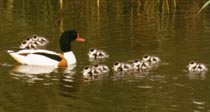 | 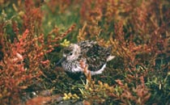 | 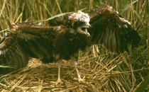 |
| Buizerd | Grutto | Kievit |
| 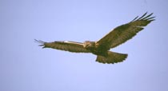 | 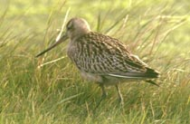 | 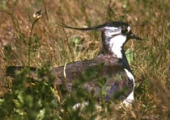 |
| Kneu | Kramsvogel | Mantelmeeuw |
| 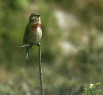 | 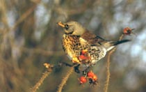 | 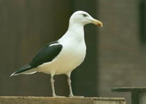 |
| Ransuil | Roodkeelduiker | Rotganzen |
| 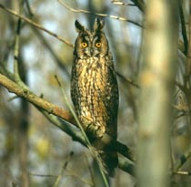 | 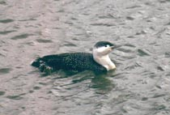 | 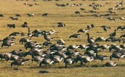 |
| Steenloper | Tapuit | Torenvalk |
| 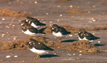 | 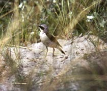 | 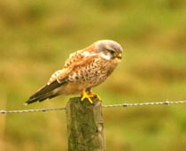 |
| Torenvalk | Visdiefje | Wulp |
| 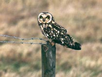 | 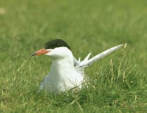 | 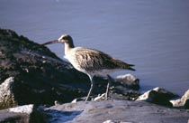 |